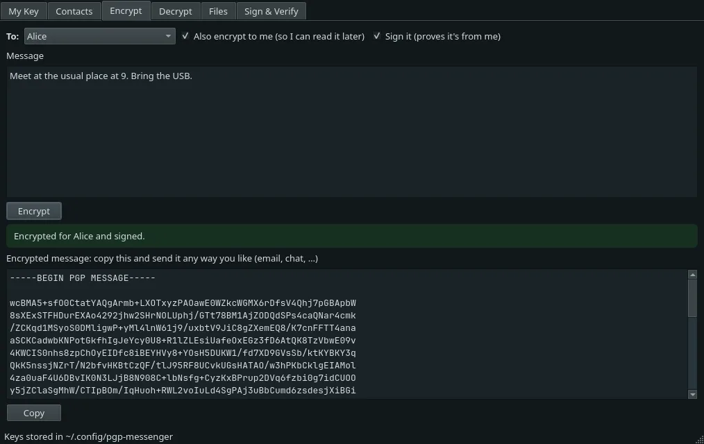

~ $ whoami
kafka.
Cyber Security student at a UK university. I build security tools in Python and spend my spare time on CTFs and Linux wargames.
About Me
I'm a first-year BSc (Hons) Cyber Security student at a UK university. I've done well so far in my Computer Mathematics, Programming and Systems assessments.
Outside of lectures I write small security tools in Python: packet analysers, file inspectors, cipher breakers. I run Arch Linux day to day and like knowing how a system works under the hood.
I'm good at explaining technical topics clearly to people of any background, from choosing a laptop to locking down a home network.
Currently into
- Capture-the-flag challenges & Linux wargames
- Reverse engineering & malware analysis
- Building security tools in Python
- Customising Linux & building PCs
Skills & Technologies
Programming
Systems
Projects

Featured
PGP Messenger
A desktop app for encrypting, decrypting, signing and verifying messages and files with OpenPGP. It generates RSA keypairs, keeps a local keyring of contacts, and works alongside GnuPG, Thunderbird and ProtonMail. Built on PGPy with no hand-rolled crypto, and tested on Linux and Windows in CI.
$ python -m pcap_analyser samples/sample.pcap PCAP ANALYSIS REPORT Packets: 2188 Hosts: 50 Findings at a glance [!!] Port scans: 2 [!!] Suspicious DNS names: 42 [!!] Possible DNS tunnels / DGA domains: 1 [!!] Cleartext credentials: 4 [!!] Unusual / suspicious ports: 2
PCAP Analyser
A command-line tool that analyses packet captures for port scans, DNS tunnelling, cleartext credentials and traffic on unusual ports.
$ python -m static_analyser samples/tiny_pe.exe STATIC ANALYSIS REPORT (the file was read, never executed) Type : PE executable (Windows .exe/.dll/.sys) SHA256 : f351c8a965b27335e90844a8574675ccf61ad4ba79b19447884ad0cb8a6dcafb --- Key observations --------------------------------------------------------- [!] Section '.packed' has high entropy (7.95) - possibly packed or encrypted [!] Section '.packed' is both writable and executable (W+X). Normal compilers [!] Section name '.packed' is associated with a known packer. [!] Only 10 imported functions, including LoadLibrary/GetProcAddress - a small
Static File Analyser
Inspects files without running them: hashes, true file type, PE and ELF headers, entropy, extracted strings and suspicious indicators. No dependencies.
$ python -m log_analyser auth.log SSH AUTH LOG ANALYSIS REPORT Failed attempts: 285 Successful logins: 9 Top failing IPs: 203.0.113.45 (150), 198.51.100.200 (40), 203.0.113.99 (40), 10.0.0.34 (5), 192.0.2.29 (2) [!] Logins after repeated failures SEV TIME IP USER METHOD FAILS USERS TRIED HIGH 2026-11-10 18:04:12 203.0.113.99 deploy password 40 deploy Brute-force attempts 203.0.113.45 2026-11-10 02:52:50 2026-11-10 03:06:02 13m12s 150 jenkins, steam, administrator, oracle (+19 more)
Log Analyser
Parses Linux SSH auth logs to detect brute-force attempts and suspicious logins, with a generator for realistic sample logs.
$ python password_checker.py --offline Password to check: Score: 75/100 (Strong) - Decent length, but 12+ characters is much stronger. Breach check skipped (--offline).
Password Checker
Scores password strength and checks for breaches against Have I Been Pwned using k-anonymity, so the password itself never leaves your machine.
$ python -m cipher_toolkit caesar crack "Wkh vhfuhw phhwlqj lv dw gdzq" shift= 3 score= 10.52 The secret meeting is at dawn shift=18 score= 86.08 Esp dpncpe xppetyr td le olhy shift=15 score= 90.23 Hvs gsqfsh asshwbu wg oh rokb shift=14 score= 138.83 Iwt htrgti bttixcv xh pi splc shift= 9 score= 140.15 Nby mywlyn gyyncha cm un xuqh
Cipher Toolkit
Implements classical ciphers (Caesar, Vigenère and XOR) alongside the attacks that break them.
from sklearn.tree import DecisionTreeClassifier, plot_tree model = DecisionTreeClassifier(max_depth=4, min_samples_leaf=10, random_state=42) model.fit(X_train, y_train) print("Model trained ✅")
Network Scan Detector
An intro to machine learning in security: a notebook that trains a decision tree to detect synthetic port scans.
Blog
Notes on security, Linux and the things I'm building and breaking.
Writeups
Walkthroughs of CTF challenges, HackTheBox and TryHackMe rooms: how I approached each one, what worked, and what I learned.
First writeups on the way
Currently working through CTFs and HackTheBox / TryHackMe labs. Writeups for retired boxes and finished challenges will land here.
Education
-
2026
BSc (Hons) Cyber Security
UK university · 2026 – 2029 (expected)
Modules include programming, computer mathematics and computer systems. Achieved highly in Computer Mathematics, Programming and Systems assessments.
Learning & Goals
Currently learning
- Linux internals & privilege escalation
- Networking fundamentals & Active Directory attacks
- x86/x64 assembly for reverse engineering
- Python for security tooling
- CTFs and HackTheBox / TryHackMe labs
Goals
- OSCP
- Land a security / research internship
- Publish a write-up or small piece of research
- PhD in security / AI security
Get in touch
Open to placements, internships and security-related opportunities, or just a chat about CTFs.
PGP public key
06DB 9540 4603 3752 CB8E 97EC 498A C134 CFD1 DEBF